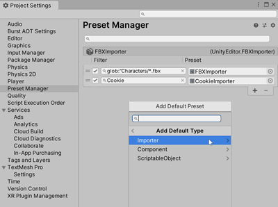
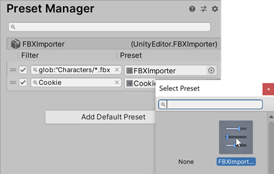
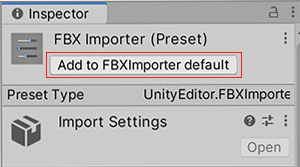
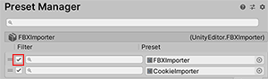

Preset Manager
The Preset Manager is a window in Project Settings (menu: Edit > Project SettingsA broad collection of settings which allow you to configure how Physics, Audio, Networking, Graphics, Input and many other areas of your project behave. More info
See in Glossary > Preset Manager) that allows you to manage custom Presets you create to specify default properties when you add a component to a GameObject or a new Asset to your project. The default Presets you define override Unity’s default settings.
Note: You cannot set the default properties for Project settings, Preferences settings, or native Assets such as Materials, Animations, or SpriteSheets.
In addition to using default Presets when creating new components and importing Assets, Unity applies default Presets when you use the Reset command in the Component Context Menu in the Inspector window.
Preset Manager reference

| Property | Description |
|---|---|
| Filter | Use the Filter field to define which components or importers the Preset is applied to. |
| Preset | Use the Preset field to set the Preset you want to use. By default, a Preset applies to all components or asset importers of that Preset type once you create it. If you want to only apply it to specific components or asset types, use the Filter field to define when to apply the Preset. |
| Add Default Preset | Select this button to choose the Importer, ComponentA functional part of a GameObject. A GameObject can contain any number of components. Unity has many built-in components, and you can create your own by writing scripts that inherit from MonoBehaviour. More info See in Glossary, or ScriptableObject to add a Preset to. If you choose Importer or Component, select the type of asset importer or component you want to create a Preset for. |
Assigning a Preset for default settings
To specify a Preset to use for default settings in the Preset Manager:
If you don’t already have a Preset in your project to use for default settings, create one.
Open the Preset Manager by choosing Edit > Project Settings, and selecting the Preset Manager.
Select Add Default Preset and select a default type.
The Preset type you choose appears in the Preset Manager list.
In the Preset field, click the Preset selector (circle icon).
From the Select Preset window, choose a Preset for this Preset type.
Alternatively, you can also drag and drop a Preset from the ProjectIn Unity, you use a project to design and develop a game. A project stores all of the files that are related to a game, such as the asset and Scene files. More info
See in Glossary window into the Preset field.
If you want to add another Preset field to the list, click the Add (+) tab.

Note: If you set a default Preset for Transform components, Unity does not use the Position values when you create a new GameObjectThe fundamental object in Unity scenes, which can represent characters, props, scenery, cameras, waypoints, and more. A GameObject’s functionality is defined by the Components attached to it. More info
See in Glossary. Instead, it sets the default Position values to the center of the SceneA Scene contains the environments and menus of your game. Think of each unique Scene file as a unique level. In each Scene, you place your environments, obstacles, and decorations, essentially designing and building your game in pieces. More info
See in Glossary view. To set the Position values to those of the default Preset, select the Transform componentA Transform component determines the Position, Rotation, and Scale of each object in the scene. Every GameObject has a Transform. More info
See in Glossary’s More items button (⋮) and select Reset.
Assigning Presets via the Inspector window
You can also add and remove Presets to use for default settings via the InspectorA Unity window that displays information about the currently selected GameObject, asset or project settings, allowing you to inspect and edit the values. More info
See in Glossary window.
To add a default Preset:
Select a Preset in the Project window.
In the Inspector window, click Add to default.
Unity adds your default Preset to the Preset Manager.Open the Preset Manager to add filters to the Preset or reorder your Preset list.

To remove a default Preset:
- Select a Preset in the Project window.
- In the Inspector window, click Remove from.
Adding filters
By default, a Preset applies to all components or asset importers of that Preset type once it is created. If you want to only apply it to specific components or asset types, you can use the Filter field to define when to apply the Preset.
Filters allow you to create multiple Presets for a given type, and apply them to specific components or importers based on whether those components and importers meet the filter criteria. You can filter by file names, folders, and file extensions.
You can also apply partial Presets that affect only properties you specify in your components or assets.
Note: Default Presets in a Preset Type are applied in order from top to bottom. This means that filters at the bottom of the list can override previous filters if not logically ordered.
- Open the Preset Manager by choosing Edit > Project Settings, then selecting the Preset Manager category.
- Find the default Preset you want to filter, and enter the search string in the Filter field.
Advanced filter search
Presets can use glob search, which is a way to use symbols in your filters to allow for more inclusive import filters. See the table below for a list of symbols you can use. A glob search filter is case-sensitive.
To create a glob search filter, the syntax is glob:"yoursearchpatternhere". Your filter field must begin glob:, and the search term must be in quotation mark characters. For example, glob:"example-folder/*.fbx" filters for any .fbx file in a folder called example-folder.
Supported symbols:
| Symbol | Description | Example |
|---|---|---|
| * | Match 0 or more characters in a single path portion (a single path portion is defined as any suite of characters excluding / ) |
glob:"foldername/*.fbx" searches for any .fbx file located in a folder named foldername. |
| ? | Match 1 character |
glob:"foldername/filename-?.fbx" searches for any .fbx file located in a folder named foldername that has the name filename- followed by one single character. For example, this includes filename-1.fbx, filename-2.fbx, but not filename-01.fbx. |
| […] | Match 1 character in the specified range, similar to a RegExp range. If the first character of the range is ! or ^ then it matches any character not in the range. |
glob:"foldername/file-[0-9]1.fbx" Matches .fbx files located in the folder named foldername where the filename begins with file- and ends with a two-digit number ending in 1. This example matches file-01.fbx, file-11.fbx, and file-21.fbx, but not file-2.fbx, or file-22.fbx. |
| (pattern–1|pattern–2|pattern–3) | Place a search inside parentheses and separate patterns by a vertical pipe to match one or more search patterns. The vertical pipe character denotes or. |
glob:("foldername/filename-?.fbx"|"foldername/file-?.fbx") Matches .fbx files located in the folder named foldername where the file name is either filename- or file- followed by a single character. This example matches filename-1.fbx, file-1.fbx, and file-2.fbx, but not filename-22.fbx, or file-22.fbx. |
| ** | Match zero or more folders and subfolders. |
glob:"foldername/**.fbx" Matches any .fbx file located in the folder named foldername and its subfolders. |
Editing the list of default Presets
This section describes how to toggle, move and remove Presets in the Preset Manager’s default Preset list for each Preset type.
- Reorder a Preset list: Select the handle (=) of the default Preset that you want to move, and drag it to the new position.
- Remove a Preset: Select the handle (=) of the default Preset that you want to remove, then click the Remove (-) button to remove the selected Preset.
- Remove a Preset type: Remove all Presets assigned to that default Preset type.
Disabling and enabling default Presets
You can temporarily disable/enable a default Preset without losing filter settings.
Open the Preset Manager by choosing Edit > Project Settings, and then selecting the Preset Manager category.
Clear the check box to the left of the default Preset to disable the Preset. Select the check box to enable.
